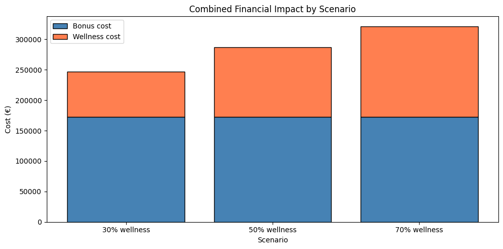

Employee Sports Benefits Data Platform
Data engineering · ETL · Workflow orchestration
Fictional client scenario set by the programme.
Problem: A fictional company wanted to test the feasibility of two employee benefits and to estimate their financial impact.
Approach: An end-to-end pipeline that loads and validates HR and activity data, orchestrates the workflow, posts activities to Slack and presents indicators on a dashboard.
Technical implementation: Airflow DAGs orchestrate the workflow, with a PostgreSQL store, Superset dashboards and numbered Bash scripts as a manual fallback, all containerised with Docker Compose. The data are simulated employee and activity data (161 employees).
Validation: Data-quality checks run in the pipeline, and commute distances are validated with the Google Maps Distance Matrix API.
Outcome: A proof of concept; activity data is simulated, not read from a live service.
